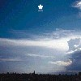
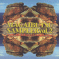

strange music page
japanese strange music * * * v.a.
|
| #オムニバス物です、安価に色々なアーチストが聞けるのがよろし。
京浜兄弟社の誓い空しくとかすげー面白いんですけどね、全然売ってないです。
ま、いろいろ有りますけど、普段フツーの音楽ばっか聴いてて、たまに変なの聴いて見ようかなーとか言う人には良いかも。
#今頃気づいたんですが、80年代モノばっかしですね。
|
#Bondage Fruitやデミセミクエイバーなどで活躍する、勝井祐二さん主催のまぼろしの世界(HPはこちら
まぼろしの世界)のオムニバスです。東京のアンダーグラウンド系の面白いグループが沢山集められてます。
- BAZOOKA JOE/jesus vs
- 原田仁 (bass,vocals)
- 宗修司 (drums,vocals)
- P.O.N./ペテン師 #7
- 広瀬淳二 (sax)
- 鬼怒無月 (guitars)
- 清水正樹 (bass)
- 高良久美子 (vibraphone)
- 植村昌弘 (drums)
- melt banana/scissor quiz
- ヤスコ (vocals)
- アガタ (guitars)
- リカ (bass)
- スドウ (drums)
- AUSIA/idiot's delight
- 足立龍介 (guitars)
- 足立宗宥 (guitars)
- 一噌幸弘 (笛)
- 吉見征樹 (tabla)
- 太田恵資 (violin)
- BLACK STAGE/おののき
- 灰野敬二 (vocals,hardy gardy)
- 勝井祐二 (violin)
- 鬼怒無月 (guitars)
- さがゆき/fairy's fable
- さがゆき (vocals,percussions)
- 鬼怒無月 (guitars)
- 法楽屋/カイラス
- 本木良憲 (instrumental voice)
- 芳垣安洋 (instrumental voice)
- 勝井祐二 (violin)
- 福岡ユタカ＋鬼怒無月/take one
- IXA-WUD/Copmplex
- ヒルマ (vocals)
- ヨコタ (guitars)
- クロイワ (bass)
- イトウ (drums)
- BONDAGE FRUIT/Octopus-Command LIVE
- painkiller/ayurveda
- John Zorn (sax)
- Bill Laswell (bass)
- Mick Harris (drums)
- 吉田達也＋勝井祐二/byzantine
- 吉田達也 (drums,keyboards)
- 勝井祐二 (violin)
- 磯田収/techno jerky karaoke version
- 磯田収 (guitars,computer)
- 長谷部信子 (voice)
- ZZZ/Swain
- 伊藤憲司 (percussions,guitars,violin)
- 鬼怒無月 (guitars)
- 20FINGERS/Welcome To The Zoo
- Dennis Gunn (vocals,guitars)
- 鬼怒無月 (guitars)
- HARPY/havana
- きょうこ (vocals)
- としえい (stick)
- イトケン (drums)
- LIVE UNDER THE SKY with 内橋,広瀬,勝井/France
- 山本精一 (guitars)
- 藤原弘明 (bass)
- 岡野太 (drums)
- 内橋和久 (guitars)
- 広瀬淳二 (sax)
- 勝井祐二 (violin)
- 勝井祐二＋ポンチ兄弟/パクチョン３
- 勝井祐二 (violin)
- 芳垣安洋 (drums)
- 鬼怒無月 (guitars)
- 大坪寛彦 (bass)
- 広瀬淳二 (sax)
まぼろしの世界: MABO-001 (1995)
#waxレーベルのオムニバス。phewの終曲(坂本龍一とのコラボレーションの曲)が聴きたくて買いました、最近復活したwax recordsから再発されたphewの1枚目には追加収録されたみたいですけど、この曲。
こーして見ると80年代の日本の音楽も結構ヘンなのが多いですね。waxのオムニバスの中では一番充実してると思います。
- FRICTION/crazy dream
- phew/終曲
- 突然段ボール/ホワイト・マン
- BOYS BOYS/monkey monkey
- GUNJOGACRAYON/35
- 恒松正敏/gears
- P-model/heaven
- INU/メシ喰うな
- E.D.P.S./to rule the night
- THE STALIN/ロマンティスト
- THE STAR CLUB/power to the punks
- ALLERGY/joker
- あぶらだこ/paranoia
- Mio Fou/pierrot le fou
- 直枝政太郎/torokko
- CHIKO HIGE/trap
- 恒松正敏/you've got to hide your love away
wax records: 32WXD-101
#
biosphere recordsのオムニバスです、基本的にはzabadak周辺の方が多いですね。
- 原マスミ/STEREO
- QUJILA/アジアのお姫様
- 藤井珠緒/ネコと休日
- karak/こわれた三日月
- 新居昭乃/窓枠の花
- Cara Jones/Cry in the distance
- 太田恵資/Inner silence
- ホーカシャン/風の人
- LOVEJOY/富士
- 吉良知彦 (produce,guitars,keyboards,bass)
- 原マスミ (vocals on 1.)
- 楠均 (drums,percussions on 1.2.6.)
- 内田健太郎 (bass on 1.)
- 近藤達郎 (keyboards on 1.3.6.9.)
- 杉林恭雄 (guitars,vocals on 2.)
- 松永孝義 (bass on 2.9.)
- 藤井珠緒 (vocals,percussions,marimba on 3.)(percussions,chorus on 8.)
- 古川昌義 (guitars,ukulele,chorus on 3.)
- 保刈久明 (guitars,programming,keyboards,chorus on 4.)
- 小峰公子 (vocals on 4.)
- 新居昭乃 (vocals,piano,chorus on 5.)
- 横山裕高 (chorus on 5.)
- 弥生 (chorus on 5.)
- Cara Jones (vocals on 6.)
- バカボン鈴木 (bass on 6.)
- 太田恵資 (vocals,piano,violin,programming on 7.)
- 伊藤ヨタロウ (vocals on 8.)
- 濱田理恵 (vocals,accordion,recorder,pianica on 8.)
- Bikke (vocals,guitars on 9.)
- 植村昌弘 (drums,chorus on 9.)
- 服部夏樹 (guitars,chorus on 9.)
biosphere records: ZA-0008 (1995)
#友達に売りつけられたもの、THE RED CURTAINってOriginal Loveの田島貴男がやってたバンドなんですね。
- THE COLLECTORS/僕はコレクター
- THE RED CURTAIN/Talkin' Planet Sandwich
- 泉水敏郎 featuring 戸川純/リズム運動
- 泉水敏郎 (drums,vocals)
- 戸川純 (vocals)
- 内田健太郎 (bass)
- 中原信雄 (keyboards)
- 鈴木智文 (guitars)
- THE PHANTOM GIFT/The Ancient Hours
- 沖山優司/妖精の海
- THE TWENTY HITS/Bad
- THE STRIKES/Little Shimmy Brown
- 少年ナイフ/Flying Jelly Attack
- HIPPY HIPPY SHAKES/Mera Mera
- THE GARDENERS/A Brether
- THE MUTANT MONSTER BEACH PARTY/In Your Season
- WOW WOW HIPPIES/K
- YOUNG ODEON/Santa Claus Is Coming To Town
- ブラボー小松 & 戸川京子/White Christmas
- 8 1/2 /少年たち
- 久保田真吾 (vocals)
- 泉水敏郎 (drums,vocals)
- 上野耕路 (keyboards)
- 鈴木智文 (guitars)
- Tanijima Chikara (bass)
テイチク/BAIDIS: TECN-20310 (1995.11.22)
#ZABADAK以前の上野洋子の録音が聞きたかったので。メトロトロン系の実験オムニバスですね、妙なのが多いです。ヘン。
- 直枝政二郎/drive music
- 鈴木慶文/渦巻女
- 西村哲也/3:33
- 棚谷祐一/in the mood with t
- 一ノ瀬権三郎/unplugged synthesizers
- 夏秋冬春/?
- 三宅一影/walkin'
- 伊藤ヨタロウ/guillotine
- 上野洋子/同音異義語のカブトムシ
- 近江商法会/真中
- 浜田理恵/liquid girl
- 青山陽一/another side of the blue mountains
- 一色進/ゴリラ
- びしゃもんてん/実録 松田課長！！
- 坂東次郎/dog burger
- 東京太郎/inosisis pulse
METROTRON RECORDS: compactron-16
#確かPHEWとHACOと上野洋子が一緒に出るイベントが有って....その時にゲットしたもの。
- Menboues/Psycho candy
- Poison Girl Friend/Poptones
- 赤痢/All the world loves lovers
- 上野洋子/Blood brother
- Melt-banana/Wordy Rappinghood
- Noodles/See you
- Phew & 近藤達郎/Sunday girl
- Houhki Kazuko/New England
- Fura Fura Skippies/Video killed the radio star
- Petty booka/Karma chameleon :tropical version
Megabank: MB-2507 (1995)
#Godmountainのオムニバス。大学の時に友達にこれを聞かしてもらって、アンダーグラウンドのこっち系の人たちに興味を持ちました。おいしいオムニバスです。
- ALTERED STATES/Bug
- 内橋和久 (guitars,electronics)
- ナスノミツル (bass)
- 芳垣安洋 (drums,percussions)
- P.O.N./ペテン師#1
- 植村昌弘 (drums,percussions)
- 広瀬淳二 (sax,noise machine)
- 鬼怒無月 (guitars)
- 記本一儀 (bass)
- 高良久美子 (vibraphone,percussions)
- 高円寺百景/doi doi
- 吉田達也 (drums,vocals)
- 久保田安紀 (keyboards,vocals)
- 桑原 (bass,vocals)
- 増田隆一 (guitars,vocals)
- tipographica/無限電車 (infinity street car)
- 今堀恒雄 (giutars)
- 外山明 (drums,percussions)
- 佐野篤 (bass)
- 水上聡 (keyboards)
- 菊地成孔 (sax)
- 松本治 (trombone)
- Dennis Gunn/Porky's out to lunch
- Dennis Gunn (all instruments,vocals)
- BASS ARMY/Sneak Attack
- 加藤英樹 (bass,voice)
- 記本一儀 (bass)
- 植村昌弘 (drums)
- DOOM/The Scraps Screamed
- Fujita Takashi (guitars,vocals)
- Morota Koh (bass)
- Pazz (drums)
- E*Trance Forbidden Place
- mars (vocals)
- aki (guitars)
- taka (drums)
- DEMI SEMI QUAVER/ローサのひまわり
- エミエレノーラ (vocals,accordion)
- 横山秀規 (bass)
- 寺師徹 (guitars,kazoo)
- 中幸一郎 (drums)
- スティーブ衛藤 (percussions,metals)
- Kuwajima Genya (keyboards,samples)
- Tsuji Ichiro/Dissecting Table Humanism
- Tsuji Ichiro (all instruments)
- P.O.N./ジョージ#1
- OPTICAL-8/God Speed !
- ホッピー神山 (keyboards,samples)
- reck (bass,vocals)
- 大友良英 (guitars,turn table)
- 湊雅文 (drums)
- Royal Squeezit/Ｐの即興曲
- エミエレノーラ (accordion)
- 勝井祐二 (violin)
- GROUND-ZERO/Null & Voild -preview
- 大友良英 (turn table,sample,guitars)
- 千野秀一 (piano,synthesizers)
- 広瀬淳二 (sax)
- 加藤英樹 (bass)
- 植村昌弘 (drums)
- 記本一儀 (bass)
- 山塚アイ (voice)
- 内橋和久 (guitars)
- Tony Buck (sample,percussions)
- 高良久美子 (percussions,toys)
- 秋岡欧 (bandlim)
Godmountain: GMCD-009
#これは、新宿の中古屋で見つけたのですが凄く面白いＣＤです、Tipographicaやハイポジやエキスポなど京浜兄弟社のオムニバスです。手に入りにくいかも、見つけたらとりあえず買うべし。
- もすけさん/豆腐
- 荒木尚美 (bass)
- 今堀恒雄 (acoustic guitar)
- 菊地成孔 (tenor sax)
- 山口優 (compose,engineering)
- 林茂助 (vocals)
- ハイポジ/じのじの
- もりばやしみほ (vocals,chorus,keyboards,machine)
- あらきなおみ (bass,chorus)
- 近藤研二 (banjo,ukulele,rhythm tr.)
- 山口優 (machine,chorus,16tr.)
- 菊地成孔 (soprano sax)
- 西岡チョコレート (trumpet)
- tipographica/Drive
ティポグラフィカ (tipographica):
- 今堀恒雄 (compose,guitars,violin)
- 佐野篤 (bass,recorder,violin)
- 外山明 (サカラ,symballs)
- 水上聡 (keyboards)
- 菊地成孔 (soprano sax)
- コンスタンスタワーズ/それはカナヅチで直せ (it must be reformed with a hummer)
- 岸野雄一 (vocals,chorus,mellotron,作詞)
- Mint Lee (piano,woodwind,作曲)
- 松前公高 (MS-20,S-1000)
- 外山明 (drums)
- 今堀恒雄 (guitars)
- 荒木尚美 (bass)
- ドミニクス/津久井湖
- 蓮実重臣
- 石沢ミチキ
- 吉川潤 (clarinet)
- 西田ひろみ (violin)
- 氏家英男 (vlc.)
- ORGANIZATION/BULL MARK
- Nagata Kazunao (electronics)
- Miyake Takemasa (keyboards,electronics)
- Yamamoto Tatsuya (percussives)
- ラッカスビーンズ/そっとしておいて
- Koki Takashi (vocals,guitars,keyboards)
- Koki Mutsuko (vocals)
- ZYPRESSEN/全ての縦縞は交差したがる
- 今井広文 (drums)
- 浅野淳二 (guitars)
- 高橋順二 (bass,cello)
- 三宅信義 (violin)
- 山上晃司 (piano)
- 阿部隆雄 (flute)
- SYZYGYS/Eyes of Green
- 冷水ひとみ (43tone organ,vocals)
- 西田ひろみ (keybaords,vocals)
- EXPO/猿の惑星6
- モンシロチョーズ/笛ふきケトル
- 高橋久美子 (vocals,xylophone,keyboards)
- 小島智子 (keyboards)
- Art Core Funk/TANZ
- 藤本'POM'敦夫 (music)
- Kambe Makoto (guitars)
- 菊地成孔 (sax)
- Shiina Tatsuto (bass)
- 林克洋 (drums)
- Kikuchi Kiyoshi (piano)
- クララサーカス/Little Giant
- 西岡由美子 (vocals,lyrics)
- 石井美紀子 (violin)
- 磯部智子 (piano,snare,compose)
- 今堀恒雄 (guitars)
- 倉地久美夫とアジャクレヨンズ/ザバザバ
- 林克洋 (drums)
- 菊地成孔 (sax)
- 富永周平 (bass)
- 倉地久美夫 (vocals,guitars,lyrics,compose)
- どくろ団/雨天決行-野球王国
- 岸野雄一 (conduct)
- 山口優 (instruments)
- 松前公高 (instruments)
- Mint Lee (instruments,vocals)
- 加藤賢崇 (vocals)
- 林茂信 (vocals)
- 近藤研二 (banjo)
- 西田ひろみ (violin)
- ユミル,トモコ,ミンコ (chorus)
- 石沢ミチキ (chorus)
京浜兄弟社: KBS#501 (1991)
#サエキけんぞうプロデュースのオムニバスです。昔のハイポジとかEXPOとかSYZYGYSとかが収録されてます。わりとNew Waveっぽい音が多いです、京浜兄弟社のオムニバス
"誓い空しく"にかなり近い感じです。これで初めてPhonogenix(元
新月の人たちが結成したユニット)を聞きました。
- インド大話術団/カーマスートラで踊ろう
- ハイポジ/エヴァ エヴァ ペー
- もりばやしみほ (vocals,keyboards,tambourine,kazoo)
- 近藤研二 (guitars,banjo,ukulele,kazoo)
- あらきなおみ (bass,chorus)
- 松前公高 (MC-500,wood block)
- コンスタンスタワーズ/クマゴロウ二号
- ビスケットホリック/Special Age
- EXPO/テクノロジーさん晩年の頓服
- 戸川純＋インド大話術団/ベッドタウンの夜は更けて
- PHONOGENIX/Golden Bug
- 津田晴彦 (guitars,keyboards)
- 花本彰 (keyboards)
- ミンカパノピカ/トラブルウェスターン
- インド人との対話:その1
- SYZYGYS/A BAO A Qu (from "Ballet Basilisk")
- 冷水ひとみ (43tone organ)
- 西田ひろみ (violin)
- クララ・サーカス/Sweet Little Pretty Baby Dolls
- 配島邦明/A'nsoloid 1-2-3-4
- もすけさん/家族旅行
- 林茂信 (vocals)
- 山口優 (music)
- 横川理彦 (cheep ukulele)
- 西岡チョコ (strange trumpet)
- あらきなおみ (sexy bass)
- インド人との対話:その2
- きどりっこ/虹色仮面
- 北川晴美＋インド大話術団/SPICE
- インド人との対話:その3
- 東京タワー/バーゲン
- 藤井邦夫/コーヒーのみたい
SOLID RECORDS: SCCD-5005 (1989.11.12)
#山本精一さん慣習の「うた」をテーマにしたオムニバス。
VIBEONってレーベルから出ていて、一旦レーベル閉鎖になってたんですけど、最近(2002.11くらい)にレーベル再開したようで入手することができました。
NOVO TONOはえとうなおこさんの静かな曲。静かな音なんですけど細かく音が詰まってます。静謐なアバンギャルド。
"ほい"って何者か知らないですけど、にしやまひろのっぽいかな？男だけど。
LOVEJOYは久々に聴いたんですけど、シンプルそのものといってもいいよーな「うた」なんですけど、何故か深淵。CDになってない曲が沢山有るみたく、聴いてみたいです。CD作らないかなぁ・・・。
あと初めて聴いたんですけど"DRILLMAN"が気に入りました。泣き系のギターにサイン波と男女のデュエット、もうちょい歌メロ良ければかなり好みなはず。
全体で統一感有るような無いような不思議なオムニバス、少なくともレーベルサンプラーって感じじゃないです。(2002.12.5)

- SUN PM 0:00/Sun Pm 0:01
- MOTSU (steal guitar)
- EYE (steal guitar)
- YOSHIMI (vocals,hue,keyboard)
- UKON (wood bass)
- LABCRY/午後、はちみつ、沸点、2001
- 三沢洋紀 (vocals,guitars,tambourine)
- 村上ゴンゾ (synthesizer)
- 清水恒輔 (bass)
- 斎藤晃彦 (drums)
- NANA (guitars,percussions,chorus)
- 宮地健作 (keyboards)
- NOVO TONO/遠い響き
- PHEW (vocals)
- 大友良英 (guitars,electronics)
- 山本精一 (guitars,electronics)
- えとうなおこ (keyboards,synthesizers)
- 植村昌弘 (drums)
- 西村雄介 (bass)
- ほい/点・線・円
- SAKANA/Johnny Moon
- POCOPEN (vocals,guitars)
- 西脇一弘 (guitars)
- POP鈴木 (drums)
- 勝井祐二 (violin)
- DRILLMAN/宇宙ライフPEOPLE
- Q-ZO (guitars,vocals)
- CAORI (bass,vocals)
- IEGUCHI (programming,lead,chime)
- TA-CO (drums)
- PRETTY (percussions)
- JESUS FEVER/ひつじ
- OKAZAWA (guitars)
- NON (vocals,guitars)
- CHINA (drums,percussions)
- LOVEJOY/ゼロ
- Bikke (vocals,guitars)
- 近藤達郎 (keyboards,percussions)
- 松永孝義 (bass)
- 服部夏樹 (guitars)
- 植村昌弘 (drums)
- 渚にて/渚のわたし
- 竹田雅子 (vocals,drums,bass,fuzz guitar,wind)
- 柴山伸二 (chorus,guitars)
- Nakamura Soichiro (engineering,mixing)
- ASSEMBLER/Leave A Thing
organized by 山本精一
VIBEON: VBON-1002 (2001)
#水族館レーベル系のオムニバス、Real FishとかPortable RockとかMio Fouとか収録です。各A,B面1曲目は全員参加の曲でB-1(CDだと、6曲目)はメドレーです。異常にさわやかな野宮真貴さん(pizzicato five)が笑えます。個人的にはReal Fish目当てです、福原まり大好きなもので。(1999.3.28)
- Bright Young X'mas/水族館オーケストラ
- クリケット/Portable Rock
- ガムラン・ホッパー/Real Fish
- 大地の糧/Voice
- ゴッホの糸杉/Mio Fou
- 美しきサフラン Oh! la la やすもの工作は江戸リズムとキャラメルの夕焼け/水族館オーケストラ
- グリーン・ブックス/Portable Rock
- 遊園地/Real Fish
- ホームシック/VOICE
- Pierrot le Fou/Mio Fou
- 福原まり (piano,keyboards on 1.3.6.8.)
- 鈴木智文 (guitars on 1.2.6.)(chorus on 4.9.)(stick on 5.)
- 中原信雄 (bass on 1.2.7.)
- 野宮真貴 (vocals on 2.6.)(chorus on 4.9.)(stick on 5.)
- 美尾洋乃 (violin on 1.3.5.6.8.10.)
- 矢口博康 (sax on 3.8.10.)(recorder on 4.)
- 戸田誠司 (guitars on 3.8.)(12stringed gutiar on 1.)
- 渡辺等 (wood bass,mandolin on 3.8.)(contrabass on 1.6.)(stick on 5.)
- 友田真吾 (drums on 1.3.6.8.)
- 小滝満 (synthesizers on 2.7.)(accordion on 1.)
- 土岐ゆきを (Simons programming on 2.)
- 鈴木博文 (loop,craft,gutiars on 5.10.)(bell on 1.)
- 鈴木さえ子 (Simons drums on 2.)
- 鈴木慶一 (Simons drums on 2.4.)(chorus on 3.)(stick on 5.)
- 佐伯健三 (chorus on 4.)(stick on 5.)
- 金津宏 (drums on 4.)
- 内田健太郎 (bass,Simons drums,chorus,stick on 5.)(bass on 1.)
- 立川芳雄 (vocals,acoustic guitars on 7.)
- 里美智子 (keybaords,synthesizes,chorus on 7.)(piano on 1.)
- 大木雄司 (guitars,chorus on 1.7.)
- 川本哲 (hand clap on 3.)
徳間JAPAN: 28JAL-4 (1983)
WAX RECORDS: TKCA-30033
#えーと
上のとセットです。
こっちは水族館レーベルの3枚目みたいで、プロデュースが鈴木慶一、鈴木博文、矢口博康、和田博己です。
とてもとても80年代っぽいCD。隙間の多い音で、好き勝手やってて、でもとてもポップな感じで...リズムの打ち込みがみんな同じ音で笑っちゃうんですけど。
聴いてみたかったのは近藤達郎さんの二曲、
ウニタミニマの原型のようなミニマルなポップス、非常に好み(ボーカルはちょっとどうかと思うけど)。
近藤達郎さんの
HP見ると「ソロアルバム作ってる...」みたいな事がここ3年くらいずっと書いてあります。早く出ないかな。
新発見はParis、コンポステラの篠田さんにマヘルの工藤冬里さん。で歌ってるのは原節子....って漫画家の方ですよね、確か。
あと7曲目は元ヤプーズの比賀江さん、何故かアナログシンセの1曲のみ。(2001.3.2)
- 直枝政太郎/運河の兵隊
- 直枝政太郎/トロッコ
- CHILDREN/還る
- CHILDREN/みどりのゆうべ
- QUOTATIONS/収穫の季節
- QUOTATIONS/ポーランド
- 比賀江隆男/恋のゆくえ
- 近藤達郎/BALLET MACHINIQUE
- 近藤達郎/ぼくら
- PARIS/L'AMOUR CONJUGAL
- PARIS/RENCONTRE
- 直枝政太郎 (vocals,all instruments on 1.2.)
- 土岐幸男 (programming on 1.2.)
- 根岸道郎 (vocals,keyboards,percussions,programming on 3.4.)
- 伊藤真 (vocals,guitars,bass,programming on 3.4.)
- 内海謙一 (vocals,keyboards on 5.6.)
- 三上敏視 (guitars on 5.6.)
- 和田博巳 (bass on 5.6.)
- 井上大介 (synthesizers,programming on 5.6.)
- 矢口博康 (sax on 5.6.8.9.)
- 今美香 (words inspiration on 5.6.)
- 戸田れい子 (photos)
- 比賀江隆男 (SH-7 on 7.)
- 近藤達郎 (vocals,piano,synthesizers,tape on 8.9.)
- れいち (vocals,drums,synthesizers on 8.9.)
- 原節子 (vocals,accordion on 10.11.)
- 浜田比左志 (vocals,sax on 10.11.)
- ラファエル・セバグ (atomosphere on 10.11.)
- 篠田昌巳 (sax on 10.11.)
- 宮崎光弘 (percussions on 10.11.)
- 工藤冬里 (piano on 10.11.)
- 早川岳晴 (bass on 10.11.)
WAX RECORDS: TKCA-30034 (original release 1984)
#長いこと捜してました、とうとう見つけました。会社帰りの中古屋さんで\990でした。気合入れて捜すと見つからないのに、ふら～っとしてると見つかるのはどーゆーことでしょうかね、待ち合わせの余った時間とか。マーフィーの法則ってやつですかね。
バナナ(BAnaNA-UG)と重藤功(DATE OF BIRTH)と小西康陽(pizzicato five)と和久井光司(SCREEN)と、なんと言っても板倉文(KILLING TIME)のオムニバスです。
もちろん板倉文の2曲(EBRIOはベストに収録)はKILLING TIME名義の初録音らしいです、どうも。ルナチコは太田裕美の歌うメチャ可愛い曲です、ちょっと渋谷系っぽかったり。やっぱセンス違うわ～スゴイ。
あんま板倉文の事ばっか書いててもアレなんで他なんですけど、笑ったのは小西康陽。この頃はまだNON STANDARDの時期のpizzicato fiveですが、収録曲はYOUNG ODEON名義のモノ。
なんかマニアックな映画音楽風インストです。考えて見ればピチカートマニアな人もこのCD捜してたりするんですよね、レアな訳です。
あと、バナナさんも格好良いです。個人的には美味しすぎる面子のオムニバスです。1986年のレコードとは思えない内容です、素晴らし。(1999.5.27)

- CELL/バナナ
- AROUND AROUND/重藤功
- 新パゾリーニ/小西康陽
- 博愛の君/和久井光司
- EBRIO/板倉文
- ルナチコ/板倉文
- HEAVEN LINE/バナナ
- 黒い十人の女/小西康陽
- KING OF WALTZ/重藤功
- BALLERINA/和久井光司
directed by 福岡知彦
- バナナ (keyboards on 1.7.)
- 矢壁篤信 (drums on 1.7.)
- 清水一登 (outroduction arrangement on 7.)(piano on 5.)
- RA (startman on 7.)
- WHACHO (percussions on 1.5.)
- 福岡ユタカ (voice on 1.5.)
- MECKKEN (bass on 1.5.7.)
- 板倉文 (guitars on 1.5.6.)
- 中西俊夫 (vocals on 2.)
- 太田裕美 (vocals on 6.)
- MATTO藤井 (percussions on 5.)
- 斉藤猫 (violin on 5.)
- Bruce Fowler (trombone on 5.)
- 小西康陽 (on 3.8.)
- 井上大介 (on 3.8.)
- 重藤功 (on 2.9.)
- 重藤進 (on 2.9.)
- 重藤賢一 (on 2.9.)
- NORICO (on 2.9.)
- 和久井光司 (vocals on 4.10.)
- 宮崎裕二 (guitars on 4.10.)
- 石川健一 (keyboards on 4.10.)
- 小野章 (bass on 4.10.)
- 河東勇治 (drums on 4.10.)
- 梅津和時 (alto sax,clarinet on 4.10.)
- 吉田哲治 (trumpet on 4.10.)
- 板橋博 (trombone on 4.10.)
- 山口美和子 (chorus on 4.10.)
- 飯村直子 (chorus on 4.10.)
EPIC/SONY RECORDS: ESCB-1366 (1992.12.2 original release 1986.6.21)
#BALCONYレーベルから出ていた、板倉文さんプロデュースの女性バンドのコンピです。
個人的にはちょっとあんまりピンと来なかったんですけど、80年代っぽいなんだかヘロヘロした質感のポップス集でした。
-A-
- 少年ナイフ/オームのポリネシア
- サボテン/ハンティング
- サボテン/ピクニック
- D-DAY/ヨット・ハーバー
- サボテン/箱庭
- コクシネル/一分間
-B-
- サボテン/花火
- D-DAY/失した遊園地
- 少年ナイフ/象のパオパオ
- サボテン/フィッシング
- コクシネル/夜の唄
- D-DAY/ピーチズ
produced by 板倉文
engineered by Ma*To
コクシネル:
- セツ (vocals,synthesizers)
- 池田洋一郎 (bass,guitars)
- 島根考典 (violin,synthesizers)
- 山際英樹 (guitars,rhythm program)
D-DAY:
- ヨシコ (vocals)
- 恭子 (guitars)
- マル (drums)
- オオモモ (keyboards)
- マリオ (bass)
サボテン:
- 板井厚子 (drums)
- 牧野里美 (vocals,guitars)
- 今沢いずみ (bass,chorus)
少年ナイフ:
- 山野敦子 (drums,backing vocals)
- 山野直子 (vocals,guitars)
- 中谷美智子 (vocals,bass)
- 板倉文 (guitars on A-1.5.B-2.3.)
- バ・ナ・ナ (keyboards on A-1.4.5.6.B-2.3.5.6.)
Balcony RECORDS: BOYS-3 (1984.12)
#えーとdisk unionの新宿の7Fでやすーく売ってたLP。あんまり良くわからないで買ったんですけど、これってちゃんとCDになってるんですよね、ジャケ違うんで分からなかった。
MINTレコード系の女性ボーカルのオムニバス。80'sな雰囲気が結構漂ってきます。EVA-1ってボーカル以外は完全に初期YAPOOSですね、YAPOOSデビュー前かな?個人的には(1999.7)
- D-DAY + 沖山優司/ジェリー・ビーンズ
- D-DAY + 沖山優司/ミッドナイト・アワー
- Kawakita Yoshiko (vocals)
- Hideshima Kyoko (guitars,vocals)
- Sakurai Mario (bass,vocals)
- Omomo Shuichi (keyboards,vocals)
- 沖山優司 (guitars,bass,rhythm box,vocals)
- REAL MOTION/チキンのうた
- REAL MOTION/赤い惑星
- Kuishi Sachiko (all instruments,vocals)
- Ishikawa Mieko (all instruments,vocals)
- EVA-1/キネオラマ
- EVA-1/COMM'ON
- Yoshikawa Minami (vocals)
- 吉川洋一郎 (keyboards)
- 比賀江隆男 (guitars)
- 中原信雄 (bass)
- 泉水敏郎 (drums)
- 少年ナイフ/ロケットにのって
- 少年ナイフ/悪魔の館
- 山野直子 (vocals,guitars)
- 中谷美智子 (vocals,bass)
- 山野敦子 (drums,vocals)
- FEEL NO PAIN/森のこども
- FEEL NO PAIN/COLOUR OF HER HAIR
- Yonetu Akiko (vocals,guitars,rhythm box)
- Nakanishi Masako (vocals,bass)
- Kagihara Chigako (vocals,keyboards)
- 斉藤美和子/ハイヒール
- 斉藤美和子/ロンリースターダストダンス
- 斉藤美和子 (vocals)
- 沖山優司 (all instruments)
- Oki Yuji (all instruments)
- Kurahashi Sadayoshi (piano)
GIRL FRIEND RECORDS: GFR-0002 (1986)
#いつの間に再発されてたんでしょう、コレ？1989年に「21世紀の子供達に捧げるスタンダード集」をコンセプトに作られた「アンファン」シリーズの2枚目。確か一枚目はヤン冨田とかが参加してたような....
結構マイナーなのも多いので分かりにくいですけど、全部カバーです。今堀さんのはイギリスのトラッドPentagleの曲です。矢口さんのは「シェリーにくちづけ」ですけど。Phil Manzaneraとかクリムゾンなんて入ってるし。
とにかく(私的には)ひじょーにオイシイメンツです、「平沢進が参加してる」とかくらいの情報しか知らなかったんですけど、矢口博康さんに鈴木さえ子さんに今堀恒雄さんに篠田昌巳さんまで。
ちなみにカバーですけど、知らなくっても全然楽しめます。今堀さんのロジカルに壊れたトラッドなんかとても面白いです。(2001.1.20)
- ORIGINAL LOVE/YOU MAKE ME FELL BRAND NEW
- Nav Katze/It's Different For Girls
- ケニー井上/When I'm Sixty Four
- ケニー井上 (steel-guitar,guitars,uchicoming)
- Inoura Hideo (drums)
- ロケットマツ (piano)
- 平沢進/Turista
- 政風会/Rikki, Don't Lose That Number
- 鈴木博文 (bass)
- 直枝政弘 (arrangement,scat)
- 棚谷陽一 (accordion,keyboards)
- 坂東次郎 (guitars)
- 沖山優司/Re-Make/Re-Model
- J's B from JAGATARA/Petite Fleur
- 篠田昌巳 (baritone sax)
- 村田陽一 (trombone)
- 八尋知洋 (cymbals,repique de mao,hand drums,suzu)
- 今堀恒雄/Light Flight
- 今堀恒雄 (acoustic gutiar,12strings electric guitar)
- DATE OF BIRTH/OKAY!
- 吾妻光良 & SWINGIN' BOPPERS/The Court of Crimson King
- 鈴木さえ子/SUGAR SUGAR
- 鈴木さえ子 (marimba,vibraphone,electric piano,percussions,guiro,rote-tom)
- Ono Masashi (steel pan,metals,bongo,percussions)
- Kawase Masato (conga,percussions)
- 井上富雄/ALISON
- 下山淳/Diamond Head
- 下山淳 (guitars)
- HOPPY神山 (wurlitzer,clavinet,mini-moog,emu-ii,prophet-5)
- 井上富雄 (fretless bass)
- Ikehata Junji (drums)
- 橋本一子/Love
- 橋本一子 (piano)
- 斉藤ネコ (violin)
- 栄田嘉彦 (violin)
- 山田雄二 (viola)
- 藤森亮一 (cello)
- 矢口博康/Tout, Tout Pour Ma Cherie
- 矢口博康
- 一色進
- 飯尾芳史
- 近藤研二
- もりばやしみほ
- 渡辺等
- 斉藤みわこ
- 鈴木さえ子
- Kawase Masato
- Kirishima Tsunehisa
- Watanabe Hanna
- Ohki Yuji
- Ebana Masaya
- Ono Masashi
- Kuribayashi Kana
- Shigeta Micayo
produced by 井出靖
POLYDOR: POCH-4004 (original release 1989)
#これこれこれ、遂に発見。中野ブロードウェイ内の中古CD屋さんにて(名前忘れた)
お目当ては20曲目の板倉文ですが、他にも国内ではEXPO,SYZYGYS,Tipographicaなど海外ではF.Frith(Henry Cow)とかHenry KaiserとかJohn Zornとか色々。私的にはストライクゾーンど真中って感じのCDです。美味しすぎます。
前衛的で難しい事やっててもポップだったりユーモラスだったりしている所が好きです、本当は色々考えていてもそんな事前面に出さないような。
あと、元
KILLING TIMEの横山雅史さんがtipographicaに在籍してたのを知ってビックリ。
やっぱりそんな中でも板倉文。結構珍しく室内楽みたいな実験的な事をやってるんみたいですけど、それでも心地よい旋律が聞こえてくるあたり。(1999.7.24)
- Henry Kaiser/Samma No Aji
- Picky Picnic/Welcome To Heaven
- Asuka Yuji
- 玖保キリコ
- Todoroki Kaoru
- Andreas Dorau/Hollen-Tingeltangel
- Constance Towers/Great Buddha Air Mail
- Fred Frith/Wilder Tongues
- Syzygys/Le Fonce (3)
- 冷水ひとみ (micro tuned organ,percussions)
- 西田ひろみ (violin,percussions)
- Lost Gringos/Unter dem Vulkan
- Laemonz/Bela Bodocampode
- Matsunobu Shigemitsu (guitars)
- Otsuki Yukiko (keyboards)
- Ohira Hiromoto (clarinet)
- Miyakoshi Hiroki (sax)
- Cockie Matsumoto (drums)
- 西田ひろみ (violin)
- Adachi Tadashi (tuba)
- Nomura Osamu (percussions)
- Wada Monaca (bass)
- Kawano (trombone)
- Henry Kaiser/Tokyo Boshoku
- Henry Kaiser/Kohayakawake No Aki
- Der Plan/Fackel der Sehnsucht
- Tipographica/Rhythm Mountains～Tanker
- 今堀恒雄 (gutiars,bass)
- 外山明 (drums)
- 菊地成孔 (sax)
- 横山雅史 (bass)
- 水上聡 (keyboards)
- Pinky Picnic & Pyrolator/Muerder's Night Fever
- Jumbo/The Boy From Ipanema
- EXPO/Ebi Combi
- 山口優
- 松前公高
- 今堀恒雄 (gutiars,bass)
- 外山明 (drums)
- 西岡ひろみ (violin)
- 菊地成孔 (sax)
- John Zorn/Purged Specimen
- Fred Frith/Stay That Way
- Pyrolator/Ritual
- Henry Kaiser/Zange No Yaiba
- 板倉文/Lotus
- 板倉文 (guitars)
- 青山純 (drums)
- Mecken (bass)
- 清水一登 (gamelan)
- 斎藤ネコ (violin)
- 栄田嘉彦 (violin)
- 山田雄二 (viola)
- 藤森亮一 (cello)
Executive Producer: 玖保キリコ
WAVE: WWCX-2010 (1989)
#佐々木敦さんの
Weatherというレーベルのコンピ。 2枚組で'Voices'が歌モノで 'Songs'はインストです。
Voicesの方は空気公団とSAKANAは別格。他はあんまり惹かれるのが無かった感じ、フツーのギターポップみたいのも有るし。
Songsの方は、Sangatsuは相変わらず田舎の電車の窓から見える風景みたいな感じの音、日本の風景だけど。
minamoは前見た時にも思ったけど、トローンとしてて眠たげな雰囲気。Sangatsuが朝ならminamoは夜かな。
RdLとSubtleは両方ともいかにもな感じだけど、Subtleの方がちょっとひねくれた歌の無いsea and cakeみたいで好き。山本精一はこれ1曲だけだと何だかよく分からないです。GROUPはECMっぽいですね、同じ日に
Eberhard Weberとか買ったんですけど、似てる。
Potoratchはどーでもいいや。
2枚組にしなくても良さそうなボリュームでしたけど、最近の日本の音響系みたいなのをチェックするには良いかも。\3000でした。
あと、ジャケ写真はとても綺麗、Sangatsuのジャケもこの人だったと思うけど。(2001.12.29)

Voices
- 7 O'Clock shadow/Now or Never
- win a sheep free/Rust Trip
- Card Skepper/Love Letter
- ASLN/Andante
- Erial/Invisible Blue
- tujiko noriko/Tokyo 2
- 空気公団/みんな誕生日
- SAKANA/19
Songs
- Sangatsu/Phooco
- Subtle/Tasty Life (full length version)
- Potoratch/The Thrice-Tied Knot
- RdL/Riddle (every sunday mix)
- Potoratch/Uniform Hieroglyphic
- 山本精一/のびあがり
- minamo/3way
- GROUP/Line
compiled and produced by 佐々木敦
P-VINE RECORDS: PCD-5649/50(WEATHER-013) (2001.12.10)
#P-VINEからのリリース。
大友良英ってなんとなくわからなくって今まであんまり聞いてこなかった(Ground-Zeroとかライヴとかで何回か見てる)んですけどね。
これはルパン三世とかの音楽の山下毅雄さんのトリビュート物です。参加メンツは以下の通り
大友良英周辺の人々でガッチリって感じです、それにオリジナルを歌ってたチャーリー・コーセーとか。9,15はNOVO-TONO(Phew+山本+植村+えとう+西村)で4.10.はHOAHIO(HACO+松原+八木)の演奏と言う事になってます。これだけメンバーこんがらがってるとどっちでも良い感じですけど。
遠藤賢司の
力入ったジャイアントロボとか、Phewさんのふにゃふにゃしたガンバとか色々面白いのはあるんですけど。16曲目から17曲目に続く所、ノスタルジックな風景に水が流れてくるみたいに入ってくる松原幸子さんの出すサイン波がとてもとても綺麗で、ちょっとやられちゃいました。Ground-Zeroのライヴ見たときに松原幸子さんってなんかわかんなかったんですけど。すごいなーって、今日はじめて思って。
音楽聴いてこんなビックリも久しぶりかも。(1999.10.10)
- プレイガールBGM
- ルパン三世 Ending Theme
- ジャイアントロボ
- スーパージェッター
- 悪魔くんオープニングテーマ
- 涙から明日へ
- 七人の刑事 PLOT-1
- 七人の刑事 PLOT-2
- ガンバのうた
- 冒険ガボテン島
- 佐武と市捕物控オームニングテーマ
- 大岡越前オープニングタイトル
- ルパン三世ワルサーのテーマ
- ルパン三世 Ending Theme
- 冒険者たちのバラード
- 煙の王様
- Song for T.Y.
- 大友良英 (turntale,synthesizers,guitars,sampler,collage)
- 菊地成孔 (sax on 1.8.13.)
- 津上研太 (sax on 1.8.13.)
- 南博 (piano on 1.13.14.)
- 高良久美子 (vibraphone on 1.4.10.)(marimba on 16.)
- 水谷浩章 (bass on 1.8.13.14.)
- 芳垣安洋 (drums on 1.8.13.)(percussions on 10.)
- 松原幸子 (sampler on 1.)
- 伊集加代子 (vocals on 1.2.8.12.133.
- 和田夏代子 (vocals on 1.8.13.)
- チャーリー・コーセイ (vocals on 2.13.14.)
- 今堀恒雄 (guitars on 2.)
- ナスノミツル (bass on 2.10.)
- 益子樹 (drum programming on 2.10.)
- 山下透 (whistle on 2.11.)(piano on 2.4.5.8.10.)(backing vocals on 3.)
- 遠藤賢司 (vocals on 3.)
- 鬼怒無月 (guitars on 3.6.9.15.)
- えとうなおこ (keyboards on 3.9.15.)
- 西村雄介 (bass on 3.9.15.)
- 植村昌弘 (drums on 3.9.15.)
- 松原幸子 (sound effects on 3.13.)(sampler on 4.5.10.11.16.17.)
- 山下泉 (backing vocals on 3.)(whistle on 4.)
- HACO (vocals,toy on 4.10.)
- 八木美知依 (Mongolian koto,toy on 4.10.)
- メグゥ (voice of Super Jetter on 4.)
- 天鼓 (vocals on 5.)
- 坂本弘道 (saw on 5.)
- 山本精一 (vocals on 6.15.)(guitars on 9.)
- Phew (vocals on 9.15.)
- ユタカワサキ (synthesizers on 9.)
- 永田一直 (synthesizers on 9.)
- 吉田アミ (vocals on 11.)
- 田中悠美子 (太竿三味線 on 11.)
- 石川高 (笙 on 11.)
- 菊地雅章 (bass on 11.)
- 千野秀一 (piano on 16.)
- 秋岡歐 (bandolin on 16.)
- 今井和雄 (guitars on 16.)
- 山下毅雄 (sampled guest on 7.12.)
P-VINE RECORDS: PCD-5804 (1999.9.10)
#ライヴ会場、渋谷LA-MAMAにて\1000でした。やーっぱ"the磨崖仏"でしょう(こんな事言ってると吉田達也のドラムあんまり好きじゃ無いみたいだ)。他にも色々聴いてみたいのが一気に聴けてお徳でした。"SUNKICH"とかも結構気になりました。(1999.12.28)

- 是巨人/PREPARATION
- 吉田達也 (drums)
- 田畑満 (guitars)
- 宮野達哉 (bass)
- the磨崖仏/JONEOIK
- 吉田達也 (vocals,keyboards)
- さがゆき (vocals)
- 鬼怒無月 (guitars)
- 原田仁 (bass)
- 森本健一 (keyboards)
- 植村昌弘 (drums)
- 聖家族/MADHYAMAKAMULA
- ZUBI ZUBA/ZUBI ZUVA I
- ルインズ波止場/GOM DEVIL
- 赤天/CAMERA
- RUINS/UNTITLED #8
- 吉田達也 (drums,voice)
- 佐々木恒 (bass,voice)
- SUNKICH/HELLSINKI
- MUSICA TRANSONIC/DAMP SQUIB
- 南条麻人 (bass)
- 川端一 (guitars)
- 吉田達也 (drums)
- 大陸男対山脈女/CHILD IN MOONMADNESS
- ZUBI ZUBA/ZUBI HYMN
- 赤天/DEMETOLIO
- 吉田達也ソロ/D.N.A.
- SUNKICH/FUTURE IS YOU!
- ルインズ波止場/CD KILLERS
- 聖家族/SAMBANDHAPARIKSADDHI
- 大山脈X/VESUVIUS
- 吉田達也 (bass)
- 城戸弘ニ (drums)
- 久保田安紀 (vocals,casiotone)
- 勝井祐二 (violin)
- RUINS/UNTITLED #12
- 赤天/COMPOSERS
- 高円寺百景/AVEDUMMA
MAGAIBUTSU LIMITED: MGC-13 (1997)
#大泉学園in Fでの、清水一登さんのライヴの時に買いました。前にAREPOSのライヴの時に買い損ねていた物です。1998.8.27に同会場"in F"で行われたKen Fieldとの即興の録音です。
勝井 + 鬼怒なのでもっと弾きまくりの激くてテンションの高い演奏かと思ってたのですが、違いました。なんだか邦楽的にな"間"を感じる即興演奏でした(テンションは高い)、清水さんもなんだかKeith Tippettを思わせるような張り詰めた演奏。
ちょっとJazz色が強いすぎるのが気になりましたけど、とても良い内容のCDでした。ちなみに買った時はビニールケースにライナーとCDの後ろ部分がついてて「ご自分で組み立ててください」状態。まぁいいけどさ。
- First Set
- Second Set
- Ken Field (alto sax,flute,percussions)
- 勝井祐二 (violin)
- 鬼怒無月 (guitars)
- 清水一登 (piano)
SUBLINGUAL RECORDS: SLR-004 (2000)
#スペースシャワーTVのフリーペーパー「タダダー！」のトリビュート。ってコレのどこがトリビュート？訳わかんないですけど、企画をやったスペースシャワーTVの高根さんって人の趣味みたいです。要するに職権濫用ってヤツですか。
まぁどんな意図で企画されたかはどうでも良いんですけど、\2500でこの内容はお徳。
特にDISC-2の1曲目、DATE COURSE PENTAGON ROYAL GARDENの音源を初収録(Indies magazine#44にもちょっとだけ入ってたけど、あっちは中途半端)。いやもう滅茶苦茶かっちょいいです。最近菊地成孔さんのページとか見てて、文章長くってうざったいなーとか思ってたんですけど(あれ好きな方ゴメンナサイ)音の方でこれだけやってくれればもう満足です。ライヴ無いかなー？
他にはさかなとか山本精一とか渚にて等、面白いトラックが多かったです。\2500だし。(2001.1.6)
DISC-1
- 高橋敏幸/このタダダーをレジに持っていく必要性が本当にあるのか
- SEAGULL SCREAMING KISS HER KISS HER/8～2000 No! No! No! tour ver.
- PANICSMILE feat.竹久圏/GHOST SUBWAY
- ホエイヌ/導き給え
- 渚にて/渚のわたし
- 史上最低エドウッズ/DRAG No.8
- ロレッタセコハン/スネークダンサー
- 恋に生きる(突然ダンボール+PANICSMILE)/ランチ
- 野坂昭如/沖縄鎮魂歌(飛べヂンヂン)
DISC-2
- DATE COURSE PENTAGON ROYAL GARDEN/サークル/ライン～最後の平和を我等に
- 菊地成孔 (organ,CD-J)
- 大友良英 (guitars)
- 高井康生 (guitars)
- 栗原正己 (bass)
- 坪口昌恭 (keyboards)
- 津上研太 (soprano sax,flute)
- 後関好宏 (tenor sax)
- 芳垣安洋 (drums)
- 藤井信夫 (drums)
- 吉見征樹 (tabla)
- 大儀見元 (percussions)
- 山本精一/まぼろば
- CRAZY KEN BAND/昼下がり
- HELICOID 0222MB//CRAZY ROCK! -Live Ver.
- さかな/BLIND MOON Digital Black Remix
- オーサカ＝モノレール/A FUNKY RIDE
- 向井秀徳 with PANICSMILE/PINK TV
- THE FOX/INDONESIA
- 小島麻由美/皆殺しのブルース
P-VINE RECORDS: PCD-5614/5 (2000.12.25)
#これがほんとに「ヒカシュー・トリビュート」なのかどうかはアヤシイよーな気もするんですけど....最近のニューウェーブ関係のバンドによる「20世紀の終りに」ただ一曲だけのトリビュートアルバム。
メンツは見ての通りです、予想通りの"たま"とか、キバリ過ぎが笑えるSKYFISHERとか、何がなんなんだかの千葉レーダーとか、音響テクノになっちゃったKovas(誰?)とか、それぞれ。
やっぱ巻上公一本人様の声のねちっこい存在感はスゴイすけど。(2001.1)
- SKYFISHER/20世紀の終りに
- たま/20世紀の終りに
- RICK STAZY/20世紀の終りに
- 大正九年/ポストゲノムラブ
- ママスタジヲ/20世紀の終りに
- 千葉レーダー/20世紀の終りに
- バケラッタ/20世紀の終りに
- SPIN/20世紀の終りに
- Kovas(Petit Mit)/20世紀の終りに (SUPER LOVE MIX)
- 巻上公一/20世紀の終りに
- produced by 中山隆史(SKYFISHER)
LABSTICK RECORDS: LAB-006 (2000)